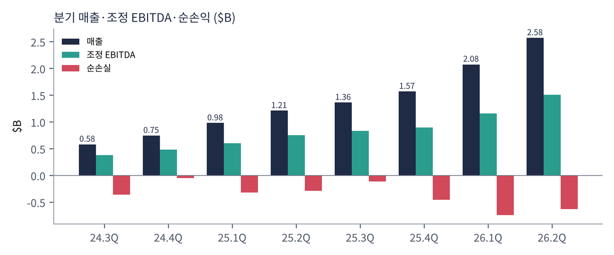
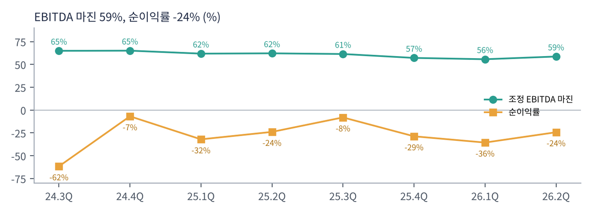
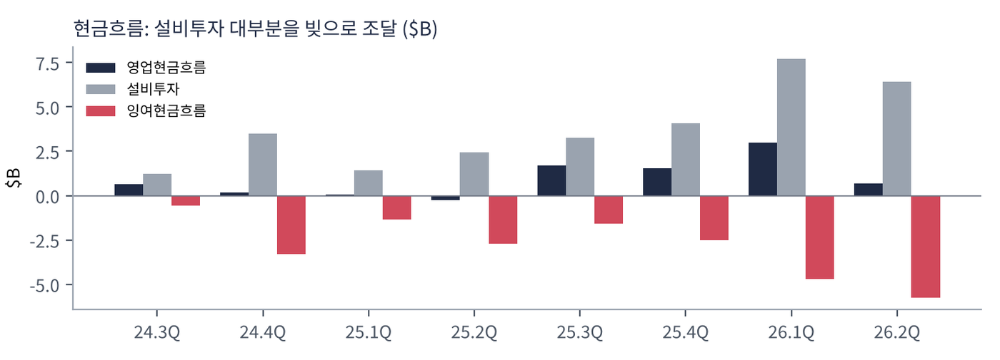
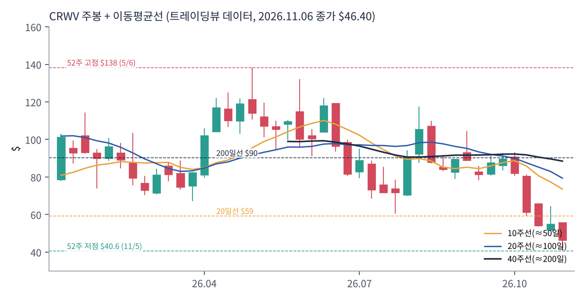
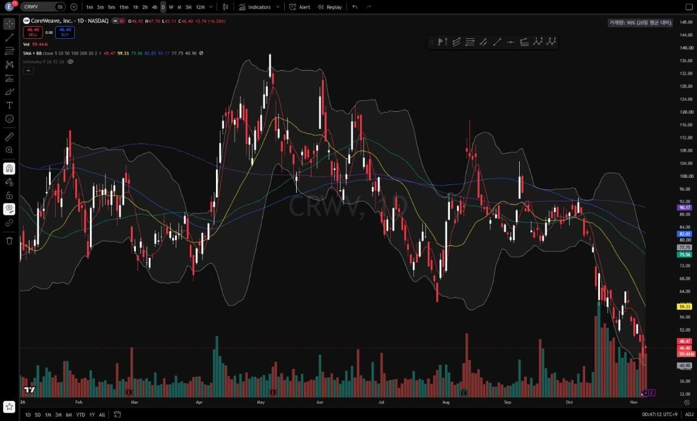
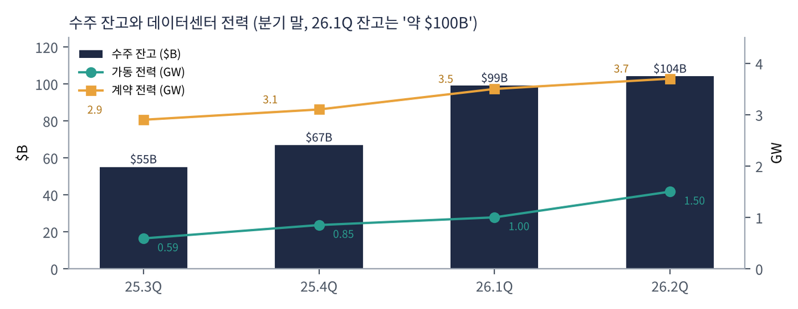

코어위브는 원래 암호화폐 채굴 회사로 시작해 2019년 이후 GPU를 AI 기업에 빌려주는 사업으로 전환했다. 엔비디아가 투자한 회사로, 최신 GPU를 가장 먼저 대량으로 받는 곳 중 하나다. 2025년 3월 나스닥에 상장했고, 2026년 나스닥-100 지수에 편입됐다. 마이크로소프트·오픈AI·메타 같은 대형 고객과 수년짜리 계약을 맺고, 그 계약을 담보로 돈을 빌려 데이터센터를 짓는 구조다.
| 항목 | 내용 |
|---|---|
| 종목 | CoreWeave, Inc. (CRWV) · AI 클라우드 · 2017년 설립 · 본사 뉴저지주 리빙스턴 |
| 경영진 | 마이클 인트레이터 공동 창업자·회장 겸 CEO |
| 시가총액 | 약 $256억 (트레이딩뷰, 11/6 종가 기준). 순손실이라 PER 없음 |
| 최근 분기(2Q26) | 매출 $25.8억(+112%), 조정 EBITDA $15.1억, 순손실 -$6.3억 |
| 주요 고객 | 2025년 공시 기준 마이크로소프트(2024년 매출의 약 62%), 오픈AI(누적 계약 약 $224억), 메타(약 $142억 계약). 2026년에는 제인 스트리트·데이터브릭스·캐터필러 등 기업 고객 확대 |
| 분기 | 매출 | 조정 EBITDA | 영업이익 | 이자비용 | 순손익 | 설비투자 | 특이 사항 |
|---|---|---|---|---|---|---|---|
| 2024.3Q | $5.8억 | $3.8억 | $1.2억 | $1.0억 | -$3.6억 | $12.2억 | 상장 전 |
| 2024.4Q | $7.5억 | $4.9억 | $1.1억 | $1.5억 | -$0.5억 | $35.0억 | |
| 2025.1Q | $9.8억 | $6.1억 | -$0.3억 | $2.6억 | -$3.2억 | $14.1억 | 3월 상장 |
| 2025.2Q | $12.1억 | $7.5억 | $0.2억 | $2.7억 | -$2.9억 | $24.5억 | |
| 2025.3Q | $13.6억 | $8.4억 | $0.5억 | $3.1억 | -$1.1억 | $32.8억 | 잔고 $550억+ |
| 2025.4Q | $15.7억 | $9.0억 | -$0.9억 | $3.9억 | -$4.5억 | $40.6억 | 잔고 $668억 |
| 2026.1Q | $20.8억 | $11.6억 | -$1.4억 | $5.4억 | -$7.4억 | $77.0억 | 잔고 약 $1,000억 |
| 2026.2Q | $25.8억 | $15.1억 | -$0.5억 | $6.4억 | -$6.3억 | $64.2억 | 잔고 약 $1,040억 |

매출은 폭발적으로 늘지만 이익은 따라오지 않는다. 2년 동안 매출은 4.4배가 됐지만 영업이익은 $1.2억 흑자에서 $0.5억 적자로 바뀌었다. 이유는 두 가지다. 첫째, 감가상각비가 분기 $5.6억(2Q25)에서 $13.9억(2Q26)으로 2.5배가 됐다. GPU 서버는 5~6년에 걸쳐 비용으로 처리되는데, 새로 산 서버가 매출을 내기 전부터 비용이 잡힌다. 둘째, 이자비용이 분기 $1.0억에서 $6.4억으로 6배가 됐다.

조정 EBITDA 마진(감가상각·이자 전 이익)은 56~65%로 높다. GPU를 빌려주는 사업 자체의 현금 마진은 좋다는 뜻이다. 문제는 그 아래 단계다. EBITDA에서 감가상각과 이자를 빼면 순이익률이 -24%가 된다. 결국 GPU가 감가상각되는 기간 안에 투자금과 이자를 회수할 수 있느냐가 이 회사의 핵심 질문이다.

현금흐름은 빚이 메운다. 2Q26 영업현금흐름 $6.8억에 설비투자 $64.2억, 차이 $57억을 부채로 조달했다(2분기 부채 발행 $135억, 상환 $39억). 2026년 1분기 영업현금 $29.8억은 고객 선수금이 크게 들어온 영향이다. 재무상태표의 선수금(이연 매출)은 $97억으로, 고객이 미리 낸 돈이 데이터센터 투자의 한 축이다.
| 항목 | 금액 | 의미 |
|---|---|---|
| 현금·현금성자산 | $55.2억 | 연초 $31.3억에서 증가(부채 조달) |
| 유형자산(GPU·데이터센터) | $467억 | 연초 $306억에서 6개월 만에 +53% |
| 차입금(소구 + 비소구) | $351억 | 소구 $314억 + 비소구 $37억 |
| 리스 부채 | 약 $163억 | 데이터센터 임차 |
| 자기자본 | $50억 | 부채비율 약 14배 |
트레이딩뷰 CRWV 일봉 300개(2025.8 ~ 2026.11.6)와 주봉으로 계산했다. 결론부터 말하면 오라클과 함께 8개 CTA 신호가 모두 매도인 종목이고, 낙폭은 더 크다. 10월 둘째 주부터 4주 만에 $82 → $40.6(-51%)으로 떨어졌다.


위: 주봉 재구성 차트. 아래: 트레이딩뷰 일봉 캡처(작도 없이 이동평균선·볼린저밴드만 표시).
| 이동평균 | 값 | 종가 대비 | 해석 |
|---|---|---|---|
| 5일선 | $48.5 | -4.3% | 신저가 후 첫 반등(+6.3%) |
| 20일선 | $59.3 | -21.8% | 10월 갭 하락 구간 |
| 50일선 | $75.6 | -38.6% | 9~10월 박스($80~90) 아래 |
| 100일선 | $82.0 | -43.4% | |
| 200일선 | $90.2 | -48.5% | 주가의 거의 2배 |
배열은 200일 > 100일 > 50일 > 20일 > 5일 > 주가의 완전한 역배열이다. 주봉 흐름: 2025년 9~10월 대형 계약 발표로 $89 → $153 → 11월 실적(데이터센터 지연에 따른 가이던스 하향 보도) 후 $65까지 -57% → 2026년 1~3월 $64~114 박스 → 4~5월 잔고 약 $1,000억 발표로 $75 → $138(5/6 고점) → 7월 $60.5까지 하락 → 8월 2분기 실적 후 $70 → $117 → 9월 $80~90 → 10월 둘째 주 -25%, 이후 3주 연속 하락, 11/5 $40.6 신저가 → $46.4 마감.
| 규칙 | 기준 | 현재 값 | 신호 |
|---|---|---|---|
| 장기 추세 필터 | 종가 vs 200일선 | $46.4 < $90.2 | 매도 |
| 중장기 교차 | 50일선 vs 200일선 | $75.6 < $90.2 | 매도 |
| 단기 교차 | 20일선 vs 50일선 | $59.3 < $75.6 | 매도 |
| 돈키언 채널 | 55일 고가 $104.6 / 저가 $40.6 | 11/5 55일 최저가 | 매도 |
| 1개월 모멘텀 | 21거래일 수익률 | -43.1% (기준 $81.6) | 매도 |
| 3개월 모멘텀 | 63거래일 수익률 | -47.4% (기준 $88.2) | 매도 |
| 6개월 모멘텀 | 126거래일 수익률 | -59.4% (기준 $114.2) | 매도 |
| 12개월 모멘텀 | 252거래일 수익률 | -59.4% (기준 $114.4) | 매도 |
| 종합 (8개 평균) | -1.00 | 전면 매도 | |
해석: 추세추종 기준으로는 가장 약한 차트다. 다만 14일 ATR $5.67은 주가의 12.2%로, 실적 발표 하루에 ±20~30%가 나와도 이상하지 않은 수준이다. 2025년 11월과 2026년 8월 실적 발표 주에는 각각 -26%, +16%가 나왔다. 이틀 뒤 실적이 단기 방향을 정할 것이고, 이번 발표에서 3분기 계약 잔고(7월 초 $250억+ 포함)와 2026~2027년 설비투자·자금 조달 계획이 핵심이다.
| 가격 | 무엇이 바뀌나 | 의미 |
|---|---|---|
| $54 ~ 55 | 10월 말 박스 상단 | 단기 반등 1차 저항 |
| $59 ~ 61 | 20일선, 10월 갭 | 단기 추세 회복 확인 |
| $72.6 | 돈키언 중간값 | 채널 신호 매수 전환 |
| $40.6 이탈 | 신저가 갱신 | 지지선 없는 구간 |
| 구분 | 가격대 | 근거 |
|---|---|---|
| 저항 2 | $59 ~ 65 | 20일선, 10월 둘째 주 갭 |
| 저항 1 | $51 ~ 55 | 10월 말 박스 |
| 지지 1 | $40 ~ 43 | 11/5 신저가, 11/5~6 종가대 |
| 지지 2 | $35 전후 | 상장 공모가 $40 아래 심리적 구간(2025년 3월 상장 초기 가격대) |
기본 판단: 사업은 커지고 있지만, 주식은 '신용 위험 자산'처럼 움직인다. 계약 잔고 $1,040억은 매출 성장의 확실성을 보여준다. 그러나 그 계약을 이행하려면 앞으로도 매년 수백억 달러를 빌려야 하고, 이자비용이 이미 영업이익을 크게 넘는다. 금리, 고객(특히 오픈AI)의 지불 능력, AI 투자 심리에 따라 주가가 가장 크게 흔들리는 종목이다. 실적 발표 전 신규 진입은 동전 던지기에 가깝다.
| 가격대 | 시나리오 | 대응 |
|---|---|---|
| $61 이상 | 단기 추세 회복 | 2차 익절 |
| $51 ~ 55 | 반등 확인 | 1차 익절 또는 소량 진입 |
| $40 ~ 51 | 실적 전 바닥 탐색 | 관망 (실적 확인 후 판단) |
| $38 이하 종가 | 지지 붕괴 | 손절 |

| 구성 | 돈을 버는 방식 |
|---|---|
| 장기 약정 계약 | 고객이 GPU 용량을 2~5년간 쓰기로 약정하고 매달 요금을 낸다. 매출의 대부분이며 계약 잔고(약 $1,040억)의 원천. 일부는 선금으로 받는다 |
| 주문형(On-demand) | 약정 없이 쓰는 만큼 내는 사용료. 비중은 작다 |
| 소프트웨어·서비스 | SUNK(학습 작업 관리), 관측·스토리지, ARIA·샌드박스 등 에이전트 AI 도구. GPU 임대에 얹어 파는 구조 |
코어위브의 매출은 '전력(MW)'에 비례한다. 데이터센터 전력이 곧 GPU를 꽂을 수 있는 용량이기 때문이다. 가동 전력은 1년 사이 약 590MW(3Q25)에서 1.5GW(2Q26)로 2.5배가 됐고, 계약 전력은 3.7GW다. 계약 전력이 모두 가동되면 매출이 지금의 2배 이상이 될 수 있다는 계산이 나온다. 반대로 데이터센터 완공이 늦어지면 매출 인식이 미뤄진다. 2025년 11월 주가 급락이 바로 그런 사례였다.
인트레이터 CEO의 2분기 메시지다. "코어위브는 AI가 모든 산업의 기반이 되고, 그 잠재력을 실현하려면 목적에 맞게 설계된 플랫폼이 필요하다는 확신 위에 세워졌다. 이번 분기 규모가 운영 레버리지로 바뀌기 시작하는 변곡점에 도달했다."
| 축 | 내용 |
|---|---|
| AI 전용 클라우드 | 범용 클라우드와 달리 처음부터 GPU 학습·추론용으로 설계. MLPerf 학습·추론 기록, 토큰당 최저 비용 |
| 엔비디아 최신 GPU 선점 | 베라 루빈 NVL72 업계 최초 가동 검증. 새 GPU를 가장 빨리 고객에게 공급하는 것이 경쟁력 |
| 멀티 클라우드 | 구글 클라우드와 전용 회선 연결(Interconnect), 다른 클라우드에서도 SUNK·데이터 가속 사용 → 하이퍼스케일러와 경쟁보다 보완 |
| 고객 다변화 | AI 연구소(오픈AI 등) → 하이퍼스케일러(마이크로소프트) → 일반 기업(캐터필러, 벤틀리, 헤지펀드) |
| 분기 | 회사의 말 | 읽는 법 |
|---|---|---|
| 3Q25 | "기록적 매출, 계약 잔고를 거의 두 배로 늘려 $550억 이상" | 대형 계약 연속 |
| 4Q25 | "클라우드 역사상 가장 빨리 연 매출 $50억 도달." 잔고 $668억, "지속적 초고속 성장 준비" | 2025년 매출 $51.3억 |
| 1Q26 | 잔고 약 $1,000억, 가동 전력 1GW 돌파, "2030년 8GW 이상으로 가는 중" | 규모 확대 가속 |
| 2Q26 | "고객 수요가 가속하고 있고 기업 도입이 넓어지고 있다." "규모가 운영 레버리지로 바뀌는 변곡점" | 수요는 강하다는 일관된 메시지 |
경영진 코멘트에는 수요 둔화 신호가 없다. 오히려 "전례 없는 수요"라는 표현이 반복된다. 시장이 의심하는 것은 수요가 아니라 그 수요를 채우는 데 드는 돈과 시간, 그리고 고객이 끝까지 돈을 낼 수 있는지다. 오라클과 같은 질문을 받고 있고, 실제로 두 주가는 10월 이후 함께 급락했다.
한 분기에 약 500MW를 추가했다. 데이터센터는 대부분 외부 개발사와 장기 임차 계약으로 확보한다(리스 부채 약 $163억). 텍사스 등에서 전력망 업그레이드 비용을 회사가 부담하겠다고 밝혔다(트레이딩뷰 보도).
SUNK, LOTA, ARIA, 샌드박스 등 AI 연구자용 도구를 계속 출시. GPU 임대의 '상품화'를 막고 고객을 붙잡는 장치다.
2분기 $31억 지연 인출 대출(HPC 인프라 담보 최초의 공모 신디케이트), 첫 유로본드, 전환사채, 제인 스트리트 $10억 지분 투자. 조달 경로는 넓어지고 있지만 비용(이자)은 계속 커진다.
조정 영업이익률은 2Q25 16%에서 2Q26 5%로 낮아졌다. 새 데이터센터의 초기 비용이 먼저 잡히는 구조라, 가동률이 올라가는 2027년 이후 개선되는지가 관건이다.
| 경쟁/리스크 | 내용 | 강도 |
|---|---|---|
| 부채·이자 | 차입금 약 $351억, 분기 이자 $6.4억 > 조정 영업이익. 금리와 신용 시장에 민감 | 높음 |
| 고객 집중 | 소수 대형 고객(마이크로소프트·오픈AI·메타)이 잔고 대부분. 한 곳의 계약 조정이 치명적 | 높음 |
| 실행·지연 | 데이터센터 완공·전력 확보 지연 시 매출 인식 지연(2025년 11월 사례) | 중간~높음 |
| GPU 감가상각 | 엔비디아 신제품 주기가 1년으로 짧아지면 구형 GPU의 임대 단가·잔존가치 하락 | 중간 |
| 경쟁 | AWS·애저·구글·오라클, 네비우스 등 다른 GPU 클라우드. 고객이 자체 데이터센터를 지을 가능성 | 중간 |
이틀 뒤 3분기 실적이 모든 것을 정한다. 잔고 증가 폭, 2026년 매출·설비투자 가이던스, 추가 자금 조달 방식(부채 vs 주식)이 관건이다. 실적 전에는 관망이 합리적이다.
계약 전력 3.7GW가 가동되고 신규 투자 속도가 매출 증가보다 느려지는 시점부터 순이익이 나기 시작한다. 그 전까지는 AI 투자 심리와 금리가 주가를 좌우한다.